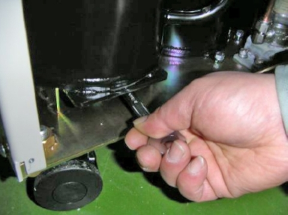

- 00000018WIA3080BF20GYZ
- id_131060181.4
- Jul 5, 2019 11:19:00 PM
Inspecting Cryocooler Systems
Prerequisites
| Required persons | Preliminary requirements | Procedure | Finalization |
|---|---|---|---|
| 1 | Not Applicable | Not Applicable | Not Applicable |
| Item | Quantity | Effectivity | Part number | Manufacturer |
|---|---|---|---|---|
| 1 inch open-end wrench | 1 | - | - | - |
| 1-1/8 inch open-end wrench | 1 | - | - | - |
| 1-3/16 inch open-end wrench | 1 | - | - | - |
| 13 mm open-end wrench | 1 | - | - | - |
| Phillips screwdriver | 1 | - | - | - |
| Item | Quantity | Effectivity | Part number | Manufacturer |
|---|---|---|---|---|
| Cotton wipes | 1 | - | - | - |
| Item | Quantity | Effectivity | Part number | Manufacturer |
|---|---|---|---|---|
| Adsorber, PN 2172241 | 1 | - | - | - |
About this task
This document covers inspection procedures for the following systems:
-
Sumitomo HC-10 (see Inspection of Sumitomo HC-10 Kelvin Systems (Shield Cooler))
-
Sumitomo CSW-71 (see Sumitomo CSW-71 Compressor 4 Kelvin System (Zero Boil-Off))
-
Sumitomo F-50 (see Sumitomo F-50 Compressor (Zero Boil-Off))
-
Leybold (see Leybold System (GE Magnets Only))
-
Balzers (see Balzers System (GE Magnets Only))
-
Sumitomo CSA-71A (see Sumitomo CSA-71A (Shield Cooler))
The site can have either a SHeM (Magnet Monitor 2) or Magnet Monitor 3.
Inspection of Sumitomo HC-10 Kelvin Systems (Shield Cooler)
Procedure
Sumitomo CSW-71 Compressor 4 Kelvin System (Zero Boil-Off)
Inspection of Sumitomo CSW-71 Compressor 4 Kelvin System
Procedure
Replacement of Sumitomo CSW-71 Adsorber
Procedure
- Using two wrenches, remove the nut securing the adsorber to
the rear panel.
Figure 2. Nut Securing Adsorber to Rear Panel 
Sumitomo F-50 Compressor (Zero Boil-Off)
Inspection of Sumitomo F-50 Compressor
Procedure
- Verify the compressor pressure is within tolerance.
Figure 5. Compressor Pressure Tolerance 
Replacement of Sumitomo F-50 Compressor Adsorber
Procedure
- Loosen the nut and washer securing the adsorber to the base
panel of the compressor unit.
Figure 9. Nut and Washer Removal 
Figure 10. Alternate View of Nut and Washer 
- Remove the adsorber from the compressor frame.
Figure 11. Adsorber Removal 
Installation of New Adsorber
Procedure
- Secure the adsorber to the front panel by tightening nut with
two wrenches.
Figure 13. Tightening Nut at Front Panel 
Leybold System (GE Magnets Only)
Inspection of Leybold System
Procedure
Replacement of Leybold Adsorber
Procedure
Balzers System (GE Magnets Only)
Inspection of Balzers System
Procedure
Replacement of Balzers Adsorber
Procedure
- Disconnect electrical power to the compressor.
- Remove both the supply and return gas lines at the compressor to isolate the coldhead from the compressor.
- Remove the cover and skin from the compressor.
- Loosen and remove the two hex-head screws that attach the adsorber to the compressor frame.
- Loosen the top and bottom Aeroquip fittings of the adsorber at the same time until both are completely free and the adsorber can be removed.
- Inspect the Aeroquip fittings on the tubes that lead to and from the replacement adsorber to ensure they are clean and that all gaskets are in place.
- Position replacement adsorber, connect the top and bottom Aeroquip fittings of the adsorber at the same time. (Since adsorber is shipped with a small helium charge, some sound may be heard as higher pressure gas from compressor enters adsorber.)
- Tighten the Aeroquip fittings completely, stopping when threads bottom out.
- Record the date and compressor hours on the new adsorber and also in the Site Log.
- Bolt the adsorber in place using two hex-head screws.
- Check the static charge of compressor. Lower pressure within the adsorber may have reduced overall pressure of the system. If so, recharge system to required pressure.
To depressurize the adsorber:Warning - Slowly screw the depressurization fitting (#12 Aeroquip) onto top of Aeroquip fitting of used adsorber.
- Point the bleed fitting away from personnel.
Sumitomo CSA-71A (Shield Cooler)
Periodic Maintenance of Sumitomo CSA-71A
About this task
The CSA-71A compressor unit requires routine maintenance according to the schedule in the table below.
| Maintenance | Frequency | Remark |
| Replace compressor adsorber | Every 20,000 hours | N/A |
| Charge helium gas to compressor | As required | N/A |
| Clean air cooler | At least one time every year | Depending on the compressor site conditions |
| Compressor fuse replacement | As required | N/A |
Procedure
Replacement of Sumitomo CSA-71A Compressor Adsorber
About this task
Replace the oil mist adsorber every 20,000 hours of operation. Following are steps to remove the used adsorber.
Procedure
- Use two wrenches to remove the nut that secures the adsorber
to the rear panel.
Figure 18. Remove Nut
Installment of New Sumitomo CSA-71A Compressor Adsorber
Procedure
- Select a new adsorber.
- Secure the adsorber to the base panel of the compressor unit by tightening the nut and washer.
- Secure the adsorber to the rear panel by tightening the nut.
- Connect the adsorber self-sealing coupling.
- Reinstall the panels and secure them by tightening the screws.
- Ensure that the pressure gauge indication is the specified value for the type of cold head. Charge helium gas in the case of low pressure.
Cleaning of Sumitomo CSA-71A Compressor Cooler
About this task
Periodic cleaning for the air-cooled heat exchanger for the lube oil/gas cooler of the compressor unit is an essential step to maintain cryocooler performance and reliability. The cooler for the compressor unit has a minimum operating life of around one year in the computer/equipment room. The frequency of cleaning will depend on the environmental conditions of the compressor unit.
Procedure
- Remove dust on the surface of the compressor cooling fins using
a portable vacuum cleaner.
Figure 21. Remove Dust on Cooler Cover Front Panel 
Fuse Replacement for Sumitomo CSA-71A Compressor Adsorber
About this task
Fuses are equipped inside of the control box for the compressor unit.
Procedure
- Replace the fuses.
Figure 22. Sumitomo CSA-71A Fuse Locations 
Finalization
No finalization steps.